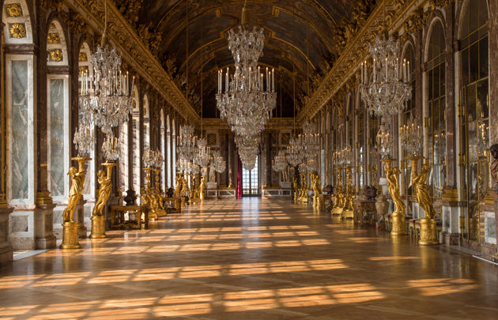

Les cyprès signalent le Château de Berne au bout de la route qui chemine au milieu des 500 hectares de
nature préservée du domaine. Depuis trois siècles, on élève dans ses caves des crus provençaux de
caractère et des vins rosés pleins de fraîcheur. Aménagées dans un style « campagne chic », les
chambres, au décor unique, offrent une vue magnifique sur le jardin, les vignobles et la forêt. Au
restaurant Le Jardin de Benjamin, récemment étoilé Michelin, la cuisine colorée regorge des parfums de
la Provence. Dans ce petit paradis, variétés anciennes, fleurs et herbes aromatiques poussent ensemble
au pied des oliviers. Le spa se dévoile dans un environnement résolument zen avec ses produits autour de
la vigne.